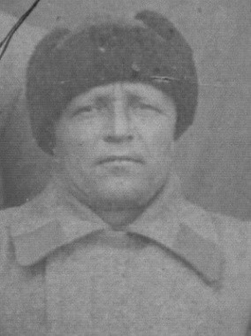

30 ноября-1 декабря 1942 года
Источник: Волгоградская правда от 30 ноября 1982 г.
ОТ СОВЕТСКОГО ИНФОРМБЮРО
Утреннее сообщение 30 ноября.
В заводской части Сталинграда наши войска вели огневой бой и разведку обороны противника. На южной окраине города бойцы предприняли ночную атаку и очистили от гитлеровцев 12 дзотов и блиндажей.
Северо-западнее Сталинграда наши войска, прорвав новую линию обороны противника на восточном берегу Дона, с боями продвигались вперед. В течение ночи было уничтожено 1000 немецких солдат и офицеров.
Юго-западнее Сталинграда наши войска продолжали успешное наступление. После освобождения от немецких захватчиков населенного пункта Ягодный Сталинградской области группа бойцов и командиров Красной Армии составила акт о нижеследующем:
«Немецко-фашистские разбойники разорили колхозников населенного пункта и угнали жителей на каторжные работы в Германию. Из 144 домов и других построек – 135 разрушено и уничтожено гитлеровцами. Немецкие бандиты перерезали весь скот и уничтожили фруктовые сады. Гитлеровцы причинили колхозу и колхозникам убытки на несколько миллионов рублей».
Событие. Продолжение ликвидации окруженной группировки.
Хроника огненных дней.
Советское Верховное Главнокомандование сразу после окружения вражеских войск решило без какого-либо паузы провести операцию по ее уничтожению. С 24 ноября шли ожесточенные бои. Враг оказывал упорное сопротивление, переходил в контратаки. К концу ноября территория, занимаемая окруженными войсками Паулюса, сократилась почти вдвое и составляла 150 квадратных километров. Но темпы нашего наступления из-за упорного сопротивления врага, переходящего в контратаки, становились все медленнее. Почему это произошло, подробно рассказывал в мемуарах Маршал Советского Союза А. Василевский: «Дело в том, что в наших исходных расчетах, за которыми последовало решение Ставки на уничтожение окруженного противника с ходу, была допущена серьезная ошибка относительно численного состава окруженной в районе Сталинграда вражеской группировки. На основе разведывательных данных фронтов, принимавших участие в контрнаступлении, подтвержденных также Генеральным штабом, мы определяли в то время общую численность окруженной группировки в 85-90 тыс. человек. Фактически в ней насчитывалось более 300 тыс. Значительно преуменьшенными были наши представления и в отношении боевой техники, вооружения, особенно артиллерии и танков, которыми располагали окруженные немецко-фашистские войска.
Основной причиной столь существенного просчета явился недоучет нами тех пополнений, которые поступали в соединения 6-ой полевой и 4-ой танковой немецких армий в процессе их наступления на Сталинград, а главное, огромного количества частей и подразделений всякого рода специальных и вспомогательных войск, попавших в котел.
Ликвидация окруженной группировки врага была нелегким делом. Но от успешного решения этой задачи во многом зависел дальнейший ход вооруженной борьбы против фашистской Германии.
ОТ СОВЕТСКОГО ИНФОРМБЮРО
Утреннее сообщение 1 декабря.
В южной части Сталинграда наши войска отбили несколько атак противника, следовавших одна за другой. В этом бою гитлеровцы потеряли убитыми до 300 солдат и офицеров.
Северо-западнее Сталинграда наши войска вели наступательные операции. Бойцы заняли укрепленный пункт противника. Уничтожив при этом 350 гитлеровцев.
Юго-западнее Сталинграда наши войска с боями продвигались вперед, цепляясь за населенные пункты, противник пытался задержать наступление советских войск, но под ударами артиллерии, танков, подвижных отрядов пехоты и кавалерии вынужден откатываться на юго-запад.
В стане врага. Пленный радист унтер-офицер 376 немецкой пехотной дивизии Зигфрид Шауфельд рассказал: «Наступление русских в районе Сталинграда явилось полной неожиданностью. В этом нет ничего удивительного. Три месяца со дня на день мы все ждали падения Сталинграда. В ноябре был получен новый приказ Гитлера, в котором он требовал, во что бы то ни стало захватить Сталинград и обеспечить войсками зимние квартиры. Мы надеялись, что нам после этого предоставят длительный отпуск. Когда я принял первые радиограммы о том, что русские прорвали наши укрепления, этому сообщению в штабе не поверили. Мне приказали запросить части, оборонявшие передний край. Но уже было поздно - на наши позывные никто не отвечал»
Подвиг И. И. Наумова

Улица его имени рядом с улицей имени 13-й Гвардейской. И это не случайно. Гвардии старший лейтенант Иван Иванович Наумов - из этой дивизии. С ней он пришел в Сталинград. С ней защищал его. Родился в 1911 г. на станции Кайсацкая Палласовского района в семье рабочего. В начале войны, добровольно пошел на фронт. Через год Наумов стал командиром стрелковой роты.
В сентябрь 1942 года шли тяжелые сражения в центре Сталинграда. Особенно упорные бои разгорелись за дом № 61, стоящий между площадью 9 Января (ныне площадь им. Ленина) и Пензенской улицей. Иван Наумов в звании старшего лейтенанта командовал 7-й стрелковой ротой 42-го гвардейского стрелкового полка 13-й гвардейской стрелковой дивизии. В ходе напряженной борьбы с врагом рота Наумова непрерывно совершенствовала оборону своего участка: бойцы оборудовали огневые точки, сооружали окопы, протягивали проволочные заграждения, проводили телефонную связь. В земляных работах им помогали жители, не успевшие эвакуироваться и оставшиеся в подвалах. Они помогали рыть ходы сообщения, а иногда брали в руки автоматы, гранаты и становились на огневую позицию.
В конце ноября 7-я рота вместе с другими подразделениями 42-го стрелкового полка перешла в наступление. Наумов с криком: «Ура! За мной!» повел гвардейцев в атаку. Увлекаемые командиром, они в едином порыве устремились на врага. Гитлеровцы побежали. Но в этом бою Наумов погиб. В письме к матери героя командование 42-го гвардейского стрелкового полка писало: «Мы за таких людей, как ваш сын Иван не пожалеем своей жизни, лишь бы как можно больше отомстить фашистам, и мы действительно мстим». Рядом с улицей Наумова – комплекс музея-панорамы «Сталинградская битва», а в центре архитектурного ансамбля – руины мельницы, где был осенью 1942 года командный пункт роты Наумова.